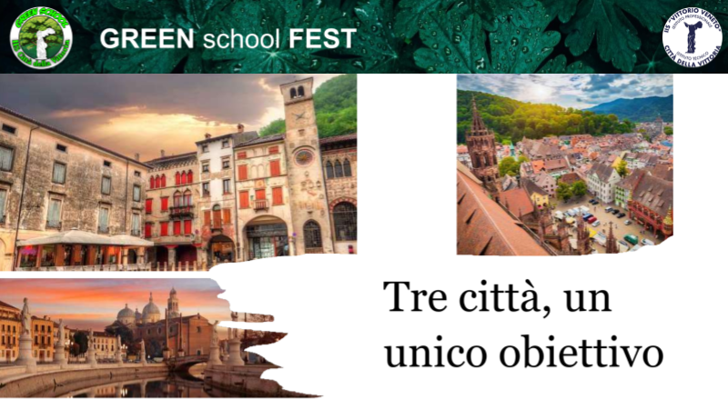
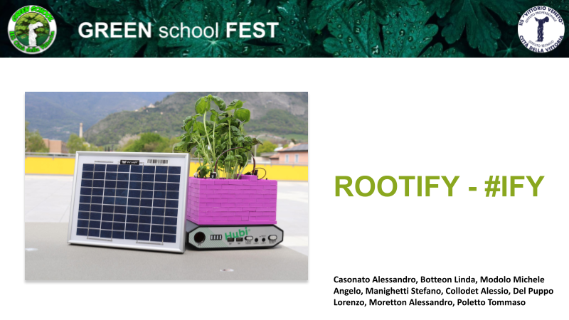
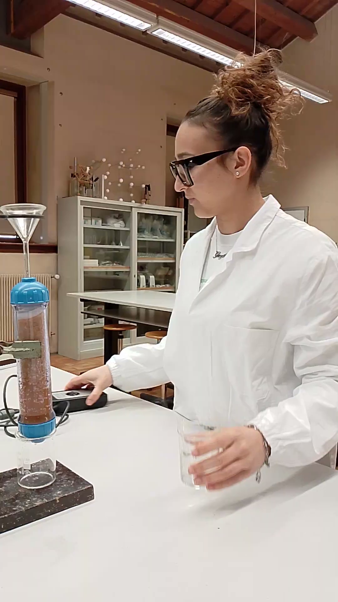
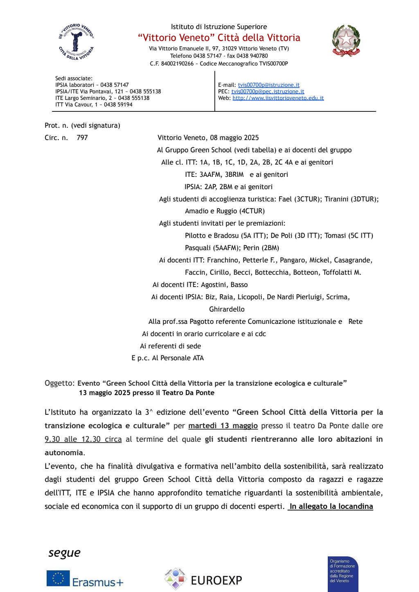
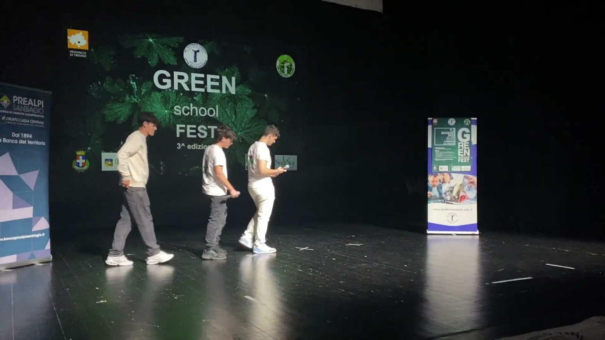
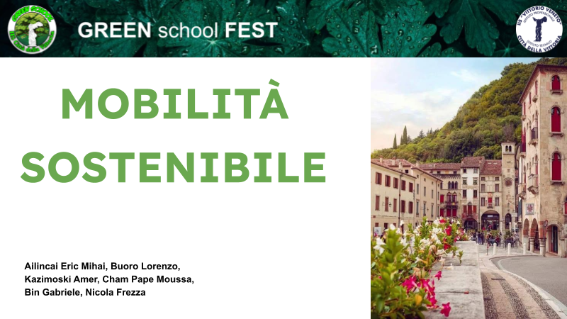
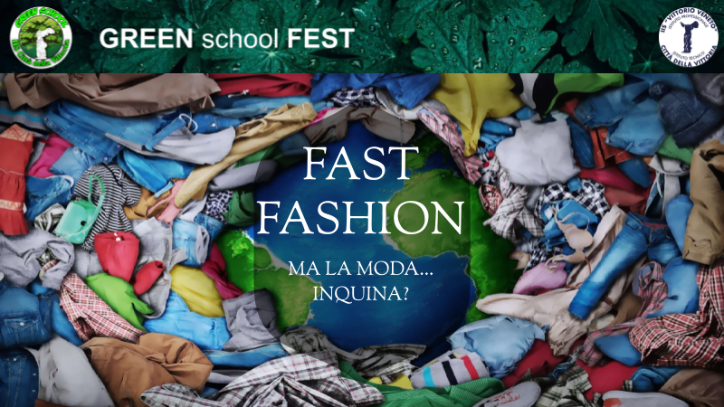
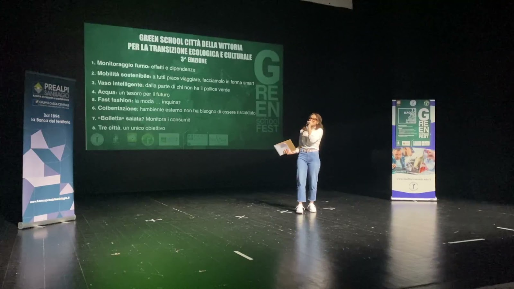
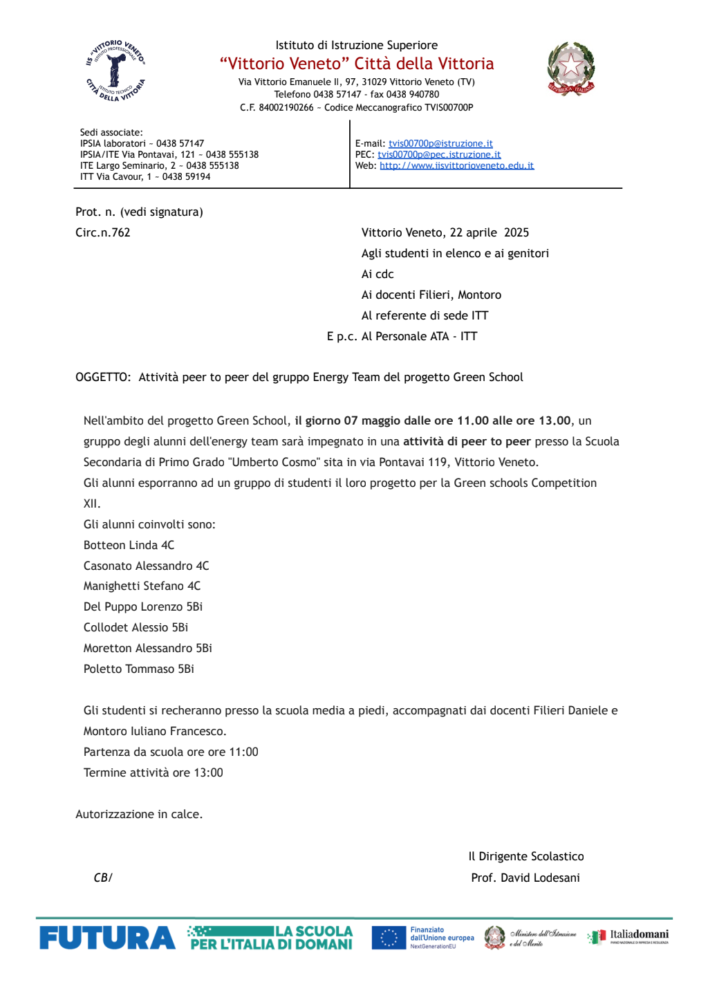
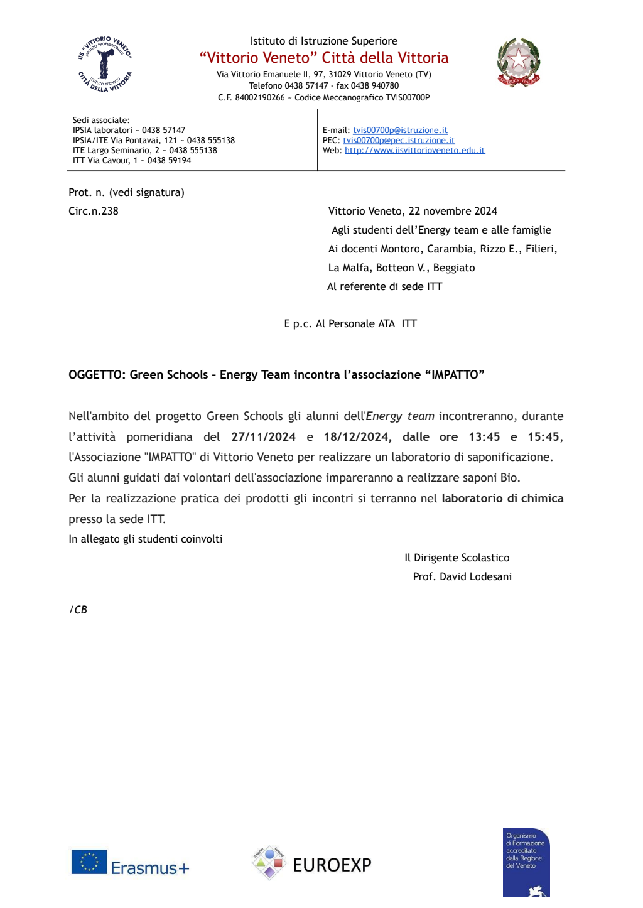

Aree di lavoro
- Formazione su salute e comportamenti sostenibili
- Comunicazione dei risultati in eventi pubblici
- Azioni concrete con monitoraggio energetico
Nome edizione: Salute, sostenibilità e azioni misurabili.
Progetti dell'annata

Analisi degli effetti di fumo tradizionale, elettronico e tabacco riscaldato su salute e prestazioni fisiche.

Studio dell'impatto ambientale e sociale della moda veloce con produzione di materiali di sensibilizzazione.

Proposte operative su piste ciclabili, integrazione bici-trasporto pubblico e percorsi a minore impatto.

Studio di dissalazione alimentata da fotovoltaico e integrazione in comunità energetiche rinnovabili.

Prototipo tecnologico per gestione sostenibile delle risorse e laboratorio di riuso dell'olio esausto.

Riduzione dei consumi energetici con monitoraggio delle classi e confronto con obiettivi di efficientamento.
Prototipo IoT per gestione sostenibile delle piante e riuso di olio esausto tramite laboratorio pratico.
Galleria fotografica
Documentazione fotografica




Energy Team